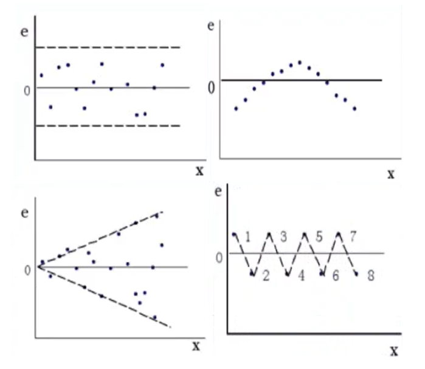
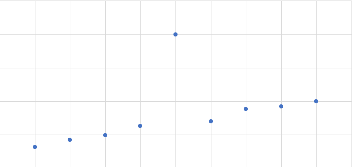
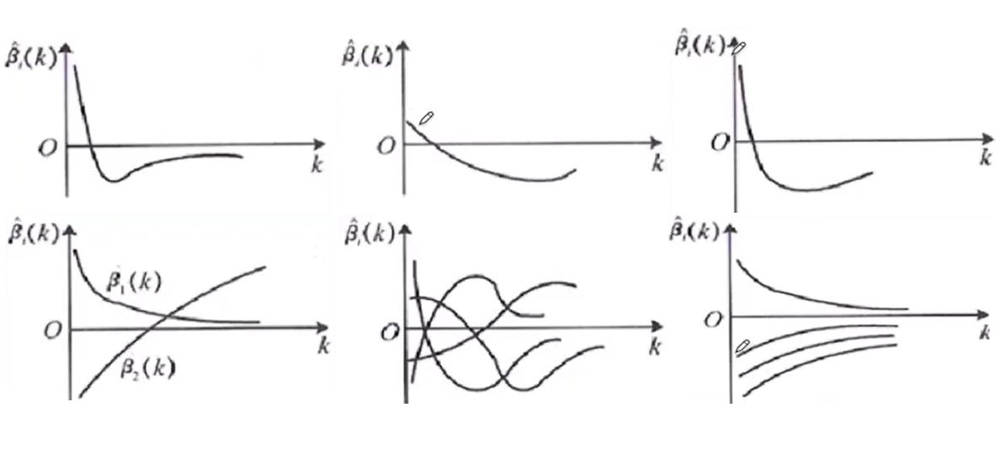

线性回归(二)-违背基本假设的情况和处理方法
本文最后更新于：3 个月前
基本假设
由线性回归(一)[1]，我们通过数学中的极值原理推导出了一元线性回归的参数估计和多元线性回归的参数估计的拟合方程计算方法。同时为了检验拟合质量，我们引入了两种主要检验：
- 样本的显著性检验：若已知总体方差则可使用t检验等参数检验；若总体方差未知，则可以使用卡方检验等非参数检验
- 回归方程的检验：回归的显著性检验，对于回归参数采用t分布进行检验；对于回归方程采用F检验
以上的检验方法均基于古典概型，同时在显著性检验的过程中默认了某些变量服从预先的基本假定，进而通过古典概型的检验方法，得到检验结果。
基本假设的内容
由线性回归（一）中推导出的方程为：$Y = X\beta + \varepsilon $，其中$\varepsilon$为随机误差项，其估计值为$e$，$e$为样本与模型的残差。随机误差项期望为0
前面提到评估拟合的质量可以使用$SSE$残差平方和来度量，同时模型得出的原则也是残差平方和最小。而残差为总体的随机误差项的估计值，且满足$\sum {{e_i}} = 0$。因此在(一)中的模型有效性的前提是$\sum {{\varepsilon _i}} = 0$，即随机误差项的期望等于0。而在实际的统计样本中，会有样本数量较小，或样本无法很好地代表整体等系统误差，而后导致样本残差不是随机误差项的无偏估计，就会对模型本身的精度产生影响。随机误差项的方差为常数，且等于样本方差
样本方差${S^2} = \frac{{\sum {{{({y_i} - \bar y)}^2}} }}{{n - 1}}$为总E体方差的无偏估计，由$SST=SSR+SSE$，其中SSR为离差平方和，为常数。SSE为残差平方和，可以得到，残差平方和的方差与总离差平方和SST相等，因此在使用样本估计整体时也需要保证样本方差与总体方差相同，即随机误差项的方差是常数，且等于样本方差。否则，参数估计和方程的显著性将会大受影响。随机误差项和因变量中不存在自相关
首先对于因变量来说，若因变量自相关，即因变量的某个值由其前一项或多项的值决定，则因变量的变化与自变量无关。因此对自相关因变量使用自变量进行线性拟合没有意义，需用其自相关关系导出其递推关系。
随机误差项为实际值与估计值的差值，线性回归得出的线性模型，其随机误差项的自相关反映的是样本的自相关，因此随机误差项不能存在自相关的情况。
随机误差项服从正态分布
所有的参数检验都基于切比雪夫大数定律，其检验变量和参数如t参数F参数等，都属于标准化后的正态分布参数。在对回归方程进行显著性检验时使用的t分布和F分布均是基于残差服从正态分布且期望和方差满足上文假设等前提假设进行检验，进行显著性检验时要保证检验的结果可信，则要保证其检验参数严格满足正态分布。
自变量的观测值为常数，且不存在精确的线性关系
对于参与线性回归的自变量来说，其值必须保证为常数，不能为随机变量。将随机变量做为预测的依据会造成结果毫无意义，同样的，对于分布没有规律或没有具体含义的变量同样不能作为线性回归的自变量。
对于自变量来说，多元线性回归中使用到了自变量矩阵，参数估计过程中有一步需要对该自变量矩阵转置相乘，而后计算逆矩阵。由于矩阵的行秩等于列秩，因此若自变量矩阵中存在线性相关的行或列，则经过转置相乘最后得出的矩阵必然存在线性相关的行或列，对于非满秩的矩阵在实数层面上无法求逆矩阵，因此在计算中要避免自变量中存在线性相关。
实际情况中两个变量相关程度很大，但其自变量矩阵并不是精确相关，这样得出的矩阵可以计算逆矩阵，但相关程度较大的行或列对应的特征值接近于0，即对吼计算得出的参数往往会忽略该相似分布。由此两个自变量存在高度相关时，就需要将其从自变量矩阵中消除。
违背基本假设的处理
随机误差项方差为异方差
从一元线性回归讲起
一元线性回归方程的主要形式为：$y = {\beta _0} + {\beta _{\rm{1}}}x + \varepsilon $其中随机误差项的估计值为$e_i$在极大似然估计得到的方程中有$y = e + \hat y = e + {{\hat \beta }_0} + {{\hat \beta }_{\rm{1}}}x$，其中样本y的方程等于残差方差加估计方差。样本y的方差为定值，且满足$\sigma _y^2 = \frac{{{S^2}(n - 1)}}{n}$，而残差方差要尽可能满足等于样本方差，则需要控制控制样本自变量方差。如何判断该方程中的随机误差项为常数呢？需要进行检验。
异方差的检验
残差图直接观察: 绘制残差关于自变量的散点图，若残差均匀离散地分布在零线两侧则方差较为显著。若残差呈现一定趋势和规律，则说明残差方差为异方差，因为其变化趋势受自变量影响，其值在统计学上不能认为为常数。如下图所示：

等级相关系数法：斯皮尔曼检验（spearman）
- 做$y$关于$x$的线性回归，计算$\varepsilon $的估计值${e_i} = {y_i} - {{\hat y}_i}$
- 将自变量$x_i$与$e_i$按升序或降序的规则排列，按照排列顺序相同等级的自变量和残差计算等级离差${d_i} = {x_i} - |{e_i}|$
- 计算等级相关系数${r_s} = 1 - \frac{6}{{n*({n^2} - 1)}}\sum {d_i^2} $，由方程可见，当残差和自变量等级变化趋势完全拟合时，相关系数等于1。若$d_i$差异较大时，则$r_s$越小。查阅资料得，等级相关系数的期望等于0，方程为$1-{r_s}^2$。
- 根据其期望和方差构造$t$统计量，$t = \frac{{\sqrt {n - 2} }}{{\sqrt {1 - r_S^2} }}{r_S}$。可以选择相应的置信区间进行单侧检验。若检验通过则认为随机误差项的方差等于常数，否则存在异方差的问题。
异方差的消除
随机误差项方差，通常与自变量的方差同步，要保持因变量$\hat y$的估计值保持稳定，则其自变量和随机误差项需要同步离散。因此为了减少随机误差项的方差，可以通过调节自变量的方差进行处理。
加权最小二乘：
加权最小二乘的原理是通过调整自变量其在回归方程中所占的比例实现方差调整。对于多元线性回归来说，若某个单一影响因素的方差较大，可以通过降低其的权重来减少其对于整体估计值的影响。对于一元线性回归来说，通过调整其中的每个变量的权重，以达到调整总体方差的目的。
对于单因素的权重估算公式为：${\omega _i} = \frac{1}{{x_i^m}}$其中$m$的值可自由选择，直至选出拟合结果最好的一组解。 经过加权变换后的样本数据为：$$ \begin{array}{l} {x_{\omega i}} = {\omega _i}{x_i}\\ {y_{\omega i}} = {y_i}\\ {{\bar x}_\omega } = \frac{{\sum {{\omega _i}{x_i}} }}{{\sum {{\omega _i}} }}\\ {{\bar y}_\omega } = \frac{{\sum {{\omega _i}{y_i}} }}{{\sum {{\omega _i}} }} \end{array} $$
最小二乘参数估计的导出公式为：
$$ \left\{ {\begin{array}{*{20}{c}} {{{\hat \beta }_{\omega 0}} = {{\bar y}_\omega } - {{\hat \beta }_{w1}}{{\bar x}_\omega }}\\ {{{\hat \beta }_{w1}} = \frac{{\sum {{w_i}({x_i} - {{\bar x}_\omega })({y_i} - {{\bar y}_\omega })} }}{{\sum {{w_i}{{({x_i} - {{\bar x}_\omega })}^2}} }}} \end{array}} \right. $$
计算得到基于加权系数法的最小二乘公式结果：$y = {{\hat \beta }_{\omega 0}} + {{\hat \beta }_{\omega 1}}x$
在计算完毕后，需要重新对拟合方程运用等级系数法进行检验，以消除异方差问题。在这个检验过程中唯一的改变量为计算权重系数时的m。因此可以对m的取值进行多次尝试，以随机误差项的方差显著性为目标函数，得到最优的权重系数拟合方程。
自相关的检验和处理
回归模型中的自相关是指，随机误差项的自相关系数不等于0，即随机误差项前后存在一定关系。按照前面的推论，若随机误差项存在自相关，则表明因变量本身也存在一定的自相关，即变量在很大程度上是由该变量先前的取值确定，而受自变量的影响较小。若一个自变量因变量的取值关系中，存在显著的自相关现象，那么对该关系进行线性拟合将会毫无意义。
自相关的检验方法
图示检验法：
计算随机误差项的估计值：残差，并绘制${et},{e{t - 1}}$的散点图。若散点大部分落在二、四象限，则表明随机误差项$\varepsilon $存在负自相关；若大部分的点落在一、三象限，则表明其存在正自相关。
自相关系数检验法：
类似于协方差的计算方法，对于自相关可以采用自相关系数计算法进行自相关程度计算。计算公式为：
$$ \rho = \frac{{\sum {{\varepsilon _t}{\varepsilon _{t - 1}}} }}{{\sqrt {\sum {{\varepsilon _t}^2} \sum {\varepsilon _{t - 1}^2} } }} $$ 其中$t \ge 2$。若要计算自相关系数的估计值，则可以使用前后残差进行计算。由公式可以得到，当残差前后相同时，其相关系数值接近1；若残差前后相反时，接近-1。该系数同协方差相关系数检验类似，当系数接近1时，表明其呈正相关关系；当系数接近-1时，表明其呈负相关关系。
DW检验法（重点）
DW检验法适用于小样本的一阶的自回归检验方法。
假设随机误差项存在着如下递推关系${\varepsilon _t} = \rho {\varepsilon _{t - 1}} + {u_t}$。若变量不存在自相关，则应不满足该自相关关系，即${H_0}:\rho \ne 0$。
由于该递推关系为线性递推关系，因此很容通过矩阵估计计算递推关系中低次项的系数。根据改递推系数$\rho$构造构造DW统计量。
$$ DW = \frac{{\sum {{{({e_t} - {e_{t - 1}})}^2}} }}{{\sum {e_t^2} }} \approx 2(1 - \hat \rho ) $$
查附录提供的DW检验表，得到$D_L, D_U$：
| $\rho$ | DW | 自相关性 |
|---|---|---|
| -1 | 4 | 完全负相关 |
| (-1, 0) | (2, 4) | 负自相关 |
| 0 | 2 | 无自相关 |
| (0, 1) | (0, 2) | 正相关 |
| 1 | 0 | 完全正相关 |
获得$D_L,D_U$可以通过DW与$D_L,D_U$的关系来判断自相关程度。
当$DW < {D_L}$时，则变量存在正相关
当${D_L} < DW < {D_U}$时，则不能判断是否有相关性
当${D_U} < DW < 4 - {D_U}$时，不存在自相关
当$4 - {D_U} < DW < 4 - {D_L}$不能判定其相关性
当$4 - {D_L} < DW$时，则变量存在负相关
消除自相关的方法
迭代法：
按照之前推导的过程，若随机误差满足自相关，则其满足${\varepsilon t} = \rho {\varepsilon {t - 1}} + {u_t}$递推关系。
因此可以通过去除自相关部分，而保留随机误差部分以消除自相关的问题。
在上式中，${\varepsilon t},\rho $均为自相关的参量，则保留$u_t$以消除自相关的影响。将现有的变量进行处理，在参数检验的过程中我们会得到一个参数值$\hat {\rho}$，将该估计值代入递推公式得到${u_t} = {\varepsilon _t} - \hat {\rho} *{\varepsilon {t - 1}}$，如此保留随机项，去除自相关项。
同理，对其他需要估计的可能自相关参数做同样处理：
这样得到了对自相关变量做一定处理后的线性回归方程。该方程的样本数量比原方程需要计算的样本数量少一个，原因是其样本来自原样本相邻项的差。
在经过变换后，仍需对变换后的变量进行DW检验，直至其满足DW检验的不存在自相关性为止。之后将样本计算回归方程，然后将原原变量依次进行还原，即能得到原原回归方程（不一定是线性了）
差分法：
其变换公式同迭代法，原理是当$\hat \rho = 1$时，通过差分数据来拟合方程。
$$ \begin{array}{l} 令：\Delta y = {y_t} - {y_{t - 1}}\\ \Delta x = {x_t} - {x_{t - 1}}\\ {\rm{ = > }}\Delta y{\rm{ = }}{\beta _{\rm{0}}}{\rm{ + }}{\beta _{\rm{1}}}\Delta x \end{array} $$ 参数的估计公式为：${{\hat \beta }_{\rm{0}}} = 0,{{\hat \beta }_1} = \frac{{\sum {\Delta {x_i}\Delta {y_i}} }}{{\sum {\Delta x_i^2} }}$BOX-COX变换法：
该变换方法适用于异方差和自相关问题。其主要原理为：
- 将因变量做一定的变换：${y^{(\lambda )}} = \left\{ {\begin{array}{*{20}{c}}
{\frac{{{y^\lambda } - 1}}{\lambda },\lambda \ne 0}\\
{\ln y,\lambda = 0}
\end{array}} \right.$
同异方差消除的权重系数法一样，其计算系数需要通过实验得出。选取不同的系数值，并计算最终结果，根据模型质量评价指标来评估模型的优略，而后得到适用性较好的系数的值。
该变换需满足$y$的取值全为正值，若不满足全为正值，则需要对y进行平移操作，使用$y'=y+a$来代替$y$，以达到该方法的使用要求。
变换后的因变量服从${Y^{(\lambda )}}\~{N_n}(X\beta ,{\sigma ^2}I)$，变换之后的分布能够得到：该变换消除异方差，和自相关的影响。
- 应用极大似然估计法进行求解：
对${L_{\max }}(\lambda )$求对数可得：$\ln {L_{\max }}(\lambda ) = - \frac{n}{2}\ln SSE(\lambda ,{z^{(\lambda )}})$
通过MLE求解可以得到该变换方法的较优$\lambda $值。
在进行消除自相关和异方差可以使用BOX-COX方法进行处理，选取合适的系数值进行变换后，求得回归方程。同时仍要对计算得到的回归方程计算等级相关系数和自相关检验，检验通过后才能获得结论，否则需要重新调整系数计算。使用伪代码的表示如下。
1 | |
异常值的检查与消除
异常值是指与取值群体偏差较大的部分取值，其产生原因一般来自记录时产生的误差、记录的变量为随机变量（无法控制取值）、缺少重要的自变量和观测数据等产生的误差。
该误差会使得模型偏离较大，对回归模型得可信度和准确度存在很大的影响。
异常值得判定
根据正态分布得显著性检验原理和中心化思想可得，当分布中得某个元素偏离中心越远，其分布概率越小。当小概率事件发生的时候，可以很显然表现出数据存在异常值。即概括来看，异常值即为小概率发生值，由于其对中心偏离甚远，因此会极大影响回归拟合的精确度。
异常值的常见情况和消除方法
因变量Y异常，如下图的序列所示

很明显图中有一点相当出类拔萃，若将此点代入回归方程的参数估计计算公式中，直接导致因变量或自变量的方差增大，造成异方差。因此需要对异常值进行处理或消除。
消除方法：
- 对残差进行标准化，即$ZR{E_i} = \frac{{{e_i}}}{{\hat \sigma }}$。该标准化的目的是统一残差的偏离程度，即标准化后的样本方差等于1，减少异方差的影响
- 删除偏离较大的残差，若样本数量足够，可以在一定程度上通过删除该异常值来达到忽略异常情况对拟合质量的影响。
- 学生化残差，$SR{E_i} = \frac{{{e_i}}}{{\sigma \sqrt {1 - {h_{ii}}} }}$，其中$h_{ii}$为帽子矩阵[2]主对角线上的元素，帽子矩阵计算：$H = X{({X^T}X)^{ - 1}}{X^T}$。其主对角线上的元素为变量Y与自变量X期望的偏离程度。
- 删除学生化残差：学生化残差之后，残差的分布即变成：$e\~N(0,1)$，其满足正态分布，按照正态分布的中心化原则，当学生化的残差$e_t$的绝对值大于3时，可以将该残差进行删除。
自变量X异常
自变量异常的检验：
- 当帽子矩阵对应杠杆值的$h_{ii}$较大时，可认为当前自变量X取值与因变量取值受影响较大，当杠杆值大于2倍或3倍的平均值${\bar h}$时，可认为该值异常。
- 计算库克距离：${D_i} = \frac{{e_i^2}}{{(n + 1){{\hat \sigma }^2}}}*\frac{{{h_{ii}}}}{{{{{\rm{(1 - }}{h_{ii}}{\rm{)}}}^{\rm{2}}}}}$，库克距离反映的是残差和杠杆值的综合效应，当库克距离越小，表明值的偏差越小。因此取库克值小于0.5认为非异常值，值大于1认为为异常值，即${D_i}{\rm{ < 0}}{\rm{.5}}$非异常，${D_i}{\rm{ > 1}}$异常值。
自变量X的异常处理同Y变量异常处理相同，将异常值删去即可。
多元线性回归下的自变量选择与处理
实际情况中，一个变量的取值不仅仅只受单一因素的影响。当一个变量受两个或以上的因素影响时，可以使用多元线性回归进行处理。不同的因素对于目标函数的影响程度各不相同，同时影响因素之间也可能存在相互关系，因此为了保证回归模型所选择的自变量合理，以保证最终的回归方程显著。需要对方程的影响因素做筛选，即对自变量进行选择和处理
自变量选择方法和影响
在线性回归（一）中提到了多元线性回归的参数估计计算方程为：$\beta {\rm{ = (}}{X^T}X)'{X^T}Y$。由参数估计的原理可以得到估计的参数方差估计值为：${{\hat \sigma }_{\beta i}}{\rm{ = }}\frac{{\rm{1}}}{{n - m - 1}}SS{E_i}$。其中m为影响因素的数量，i为第i个估计的参数。若在选择因素时放开了某些因素：
- 最后的计算得到的参数估计值的方差为有偏估计
- 部分因素的选择模型方差会小于全因素模型的方差
自变量选择的评价指标
在线性回归(一)中,回归函数拟合的依据按照残差平方和最小原则，即SSE最小；同时通过皮尔逊相关系数检验来检验原始数据是否符合线性相关；和拟合的结果和原始数据之间是否存在强相关的关系。
如果实际自变量之间存在多重共线性等问题，通过这两个系数反映的特征仍不完全，引入了一个调整决定系数。在进行自变量的选择时受到影响的主要是回归方程的自由度，同时因为选取的自变量的数目差异导致的随机误差项方差变化业主要受自由度的影响。因此对于需要对自由度进行系数调整；调整复决定系数的计算方进行系数调整；
调整复决定系数的计算方法：$adj{R^2} = 1 - \frac{{n - 1}}{{n - p - 1}}(1 - {R^2})$ 从计算公式中可以得出，当自变量的自由度增加时调整系数减小，即其对回归结果的贡献减小。因此，控制调整系数的大小，可以大概把握合理的方程自由度。 赤池信息量（Akaike Information Criterion）是一个基于极大似然估计原理的模型选择准则[3]。其计算公式为：$AIC = - 2\ln L({{\hat \theta }_L},x) + 2p$其中$\ln L({{\hat \theta }_L},x)$为似然函数，$p$为自变量选择的数量。其中似然函数也可以改写为：$n\ln L(SSE)$。赤池信息量同时考虑了似然函数和方程维数，而残差平方和与维数的关系不确定，因此需要找到一个平衡位置以确保赤池信息量达到最小。该统计量确定最优与消除异方差的权重系数的计算和消除自相关的$BOX_CDX$变换一样，需要计算多个值，从中选出最满足条件的结果。统计量$C_p$与赤池信息量的评估原理相同，其计算公式为：
$$ \begin{array}{l} {C_p} = \frac{{SS{E_p}}}{{{{\hat \sigma }^2}}} - n + 2p\\ = (n - m - 1)\frac{{SS{E_p}}}{{SS{E_m}}} - n + 2p \end{array} $$
其中$SSE_p$为当前选择的的部分自变量回归模型的残差平方和，$SSE_m$为考虑所有自变量计算的残差平方和。 同样确保该统计量最小得到最优。
自变量的选择方式
当自变量存在${x_1},{x_2},{x_3},{x_4},{x_5},{x_6}…$，等数量较多的自变量时，无法通过对这些自变量排列组合，然后分别计算对应组合下的残差平方和，相关系数，赤池信息量，$C_p$等统计量时，然后对组合进行对比得出最优组合时。需要通过一些更加高效的方法来遍历这些自变量信息。下面推荐两种自变量的遍历方法。
若直接采用所有自变量的排列组合形式，若有m个自变量类型，则其全部组合的数量为：$C_m^1 + C_m^2 + … + C_m^m$
前进法
- 先对所有的单变量因素进行拟合，然后根据拟合结果计算上述4个统计量，得到效果最好的一个变量；
- 考虑上一步增加的变量，在剩余变量中选取一个与当前选取变量组合，计算所有的组合情况，并选出最优组合与先前组合进行了比较，若更优则选取，若更差则放弃；
- 考虑上一步增加的变量，再次在剩余变量中选取并组合，计算组合情况选择最优，并与与上次组合结果比较优劣；
- 循环第3步，直到遍历变量全部完成或当优化程度下降时停止，得到最优组合。
说明：
若自变量包括${x1},{x_2},{x_3},{x_4},{x_5},{x_6}…$，分析计算$y(x_1),y(x_2)…$若此时$y(x{t1})$的拟合效果最好进行步骤2；
即分析计算$y(x{t1}, x_1), y(x{t1}, x_2),…$找到最优组合并于第一步计算得到的结果进行对比，若更优则继续循环，若更差则停止循环。
后退法
与前进法相反
- 先将所有的因素进行分析计算，保存四个统计量
- 删除其中一个变量的影响因素，并对进行分析计算，找出删除一个自变量的最优组合，并于先前组合进行对比。若结果更好则继续，若更差则停止。
- 循环第2步直到自变量数量为一，或删除变量结果变坏为止。
在对前进法和后退法进行优化检验时，除了使用四个统计量依据进行模型评估。还可以使用线性回归（一）中提到的回归方程的显著性检验进行检验，即F检验。
当采用前进法时，当F检验计算得到的概率大于置信概率接受原假设，方程显著，添加变量。
使用后退法进行F检验时，当检验结果概率小于置信概率，拒绝原假设，方程不显著，剔除当前变量。
由变量的检验方法和计算过程可得，当变量被剔除后，若被剔除的变量不全为0时会增加随机误差项的方差，因此在使用前进法或后退法进行变量选择时，可适当保留一些非最优分支进行计算，以减少该方法产生的异方差影响。
多重共线性的处理
多重共线性指的是不同的自变量之间本身存在显著的线性关系，即为开头讲到的自变量存在精确的线性关系。由于自变量存在精确的线性关系，若其中一个自变量对因变量的影响显著，则其他具有精确线性关系的自变量对因变量作用的效果也相同，这就导致在做多元线性回归时无法计算存在精确线性关系的自变量的系数。
多重共线性的检测和处理
为了确保精确线性关系被筛选出来，需要对多重共线性进行检验，下面详细介绍皮尔逊相关系数法、方差扩大因子法和特征根判定法。
皮尔逊相关系数检验法
自变量的检测与自变量和因变量的线性相关检测相同，通过对$x_1, x_2$变量直接计算相关系数，然后给相关系数设定一个临界值，根据临界值与相关系数之间的关系进行判断。相关系数的计算公式为：$\rho = \frac{{\sum {({x_{1i}} - {{\bar x}_1})({x_{2i}} - {{\bar x}_2})} }}{{\sqrt {\sum {{{({x_{1i}} - {{\bar x}_1})}^2}} *\sum {{{({x_{2i}} - {{\bar x}_2})}^2}} } }}$。同时可以通过直观判定来辅助检验：
- 添加或删除一个变量，回归系数的估计值发生很大变化，可认为存在多重共线性。因为多重共线性的参数会叠加到其他共线变量的参数上。
- 一些自变量在方程的显著性检验中未通过检验，可初步判定存在严重的多重共线性。
方差扩大因子法VIF
对自变量进行相关系数检验涉及到两个自变量相互检验，即有序数对。
对所有的变量列表计算可以得到所有变量的相关性矩阵，如下所示：
$$ {R_{p \times p}} = \left[ {\begin{array}{*{20}{c}} {r11}&{r12}&{...}&{r1p}\\ {r21}&{r22}&{...}&{r2p}\\ {...}&{...}&{...}&{...}\\ {rp1}&{rp2}&{...}&{rpp} \end{array}} \right] $$其中p为自变量数量，rij为第i个自变量与第j个自变量的相关系数计算值。
对相关矩阵进行标准化之后[4]，其主对角线上的元素即为方差膨胀因子。令：$C = {({(R)^T}R)^{ - 1}}$
其中$R*$为相关矩阵的伴随矩阵。VIF为矩阵$C$的主对角线上的元素。
其中
$$为矩阵上第i个主对角线上的元素对应得复决定系数
复决定系数计算公式为:$adj{R^2} = 1 - \frac{{n - 1}}{{n - p - 1}}(1 - {R^2})$，其中${R^2}$为C矩阵对应对角线的上元素$VIF_j$为膨胀因子。$\bar V\bar I\bar F$为平均膨胀因子。当膨胀银子大于10或平均膨胀因子大于1时，可认为自变量之间存在严重的线性关系，即存在多重共线性。
特征根判定法
对矩阵${X^T}X$求解特征值，若有特征值趋近于0，则表明其中存在多重共线性，近似于0的特征根的个数等于多重线性的重数。 引入条件数${k_i} = \sqrt {\frac{{{\lambda _m}}}{{{\lambda _i}}}} $来度量特征根的离散程度。 当$k \in (0,10)$，不存在多重共线性当$k \in (10,100)$，存在较强的多重共线性
当$k \in [100,\infty )$，存在严重的多重共线性
多重共线性的处理
若自变量之间存在多重共线性时，可以通过剔除共线的变量或增加样本量来解决多重共线性问题。
多元线性回归的优化方法
在实际情况下，多元线性回归的很多前提假设不能成立，因此可以在一定程度上对多元线性回归方法进行改良。改良的实质是牺牲某些信息或精度为代价，使得模型的表现更实际、更可靠
岭回归
岭回归估计是基于最小二乘估计，通过改变自变量矩阵X标准化后的矩阵，来改变最终的回归结果。
对于多元线性回归有参数的估计公式：$\hat \beta = ({X^T}X)'{X^T}Y$ 岭回归对这部分的参数进行处理，得到$\hat \beta (k) = ({X^T}X + kI)'{X^T}Y$ 其中$\hat \beta (k)$叫做岭回归参数，$k$为岭参数，当$k=0$时，岭回归等价于最小二乘回归。 由岭回归的计算公式可知，参数$\hat \beta (k)$是关于岭参数的函数，其取值同k连续或离散。由于其由k决定，因此岭回归的主要目标是选择一个合适岭参数k来使得模型更加有效。 首先可以对不同取值的k，作$\hat \beta (k)$关于k的函数图像，该函数图像称为岭迹，常见的岭迹如下图所示：
岭参数确定依据：
- 各回归系数的岭迹基本稳定
- 回归系数的符号合理
- 取岭迹的平稳拐点
- 方差扩大因子法，使得所有的膨胀系数小于10
- 通过残差平方和最小确定k值
LASSO回归<span class=”hint—top hint—rounded” aria-label=”LASSO回归法-
“>[5]</span></a></sup>
LASSO是一种压缩估计，通过构造一个惩罚函数(L1范数)，得到一个较为精炼的模型。
惩罚函数的构造方法为：$L = {\left| {\left| {\beta X - Y} \right|} \right|^2} + \lambda {\left| {\left| \beta \right|} \right|_1}$ 惩罚函数对估计参数求偏导：$\frac{{\partial L}}{{\partial \beta }}{\rm{ = }}{X^T}(Y - X\hat \beta ) + \frac{{\partial (\lambda {{\left| {\left| \beta \right|} \right|}_1})}}{{\partial \beta }}$ 得到LASSO回归的参数计算公式：${{\hat \beta }_j} = sign(\frac{1}{n}{X^T}Y){(\left| {\frac{1}{n}{X^T}Y} \right| - \frac{\lambda }{2})_ + }$LASSO回归的计算公式相当复杂，一般通过坐标下降法[6]进行迭代求解，或使用最小角回归法[7]。进行计算求解。
附表
参考资料
本博客所有文章除特别声明外，均采用 CC BY-SA 4.0 协议 ，转载请注明出处！